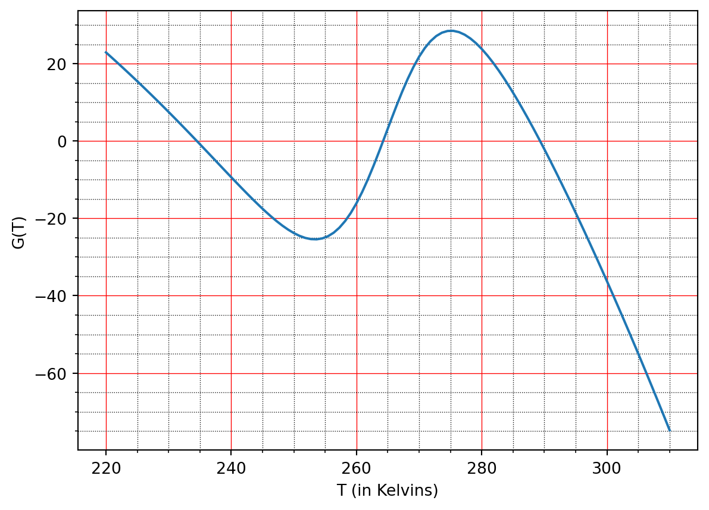

Within Chapter 12, the heat system was studied: \[
\begin{gathered}
\frac{\partial T}{\partial t} = \kappa \frac{\partial^2 T}{\partial x^2}, \\
T(x = 0, t) = A \cos(\omega t), \\
|T(x, t)| \text{ is bounded as $x \to \infty$}.
\end{gathered}
\] for \(x \geq 0\). The initial condition can be ignored.
The solution was sought in the form of \(T(x, t) = G(t) H(x)\) using a separation of variables procedure leading to \[
\frac{G'}{G} = \kappa \frac{H''}{H} = \lambda.
\] Go through an argument that the cases of \(\lambda = 0\) and \(\lambda\) real lead to incompatible solutions. Review the calculation that \(\lambda = i\omega\) leads to the desired solution given in (Equation 12.1).
Q2. The wine cellar problem II
\(\nextSection\)
Review the code written in lecture15-winecellar.ipynb.
Verify how well the numerical solution matches the exact analytical solution by overlaying the numerical solution with the analytical solution.
Investigate the solutions under different choices of parameters and time-stepping tolerances until you are confident you know how the numerical algorithm works.
Q3. EBMs with variable sun
\(\nextSection\)
Satellite data indicates that \(Q\), varies roughly between 341.37 W/m2 and 341.75 W/m2, with a period of about 11 years.
Use the simple EBM given in (Equation 13.3) and repeated below: \[
Q(1 - a) = \sigma \gamma T^4,
\] with a constant albedo, \(a = 0.3\) and greenhouse gas factor \(\gamma = 0.6\) to estimate the resultant variation (max and min) in the Earth’s mean surface temperature \(T\).
Similar to (a) but this time, use the Budyko balance equation, \[
Q(1 - a) = A + BT
\] with \(A = 203.3 \, \mathrm{W} \mathrm{m}^{-2}\) and \(B = 2.09 \, \mathrm{W}/(\mathrm{m}^{2} \, {}^\circ \mathrm{C})\) to estimate the resultant variation in the surface temperature. Use \(a = 0.3\).
The actual variation in surface temperature is in fact less than what you computed above. Why might this be?
Q4. EBMs and phase line analysis
\(\nextSection\)
Consider the energy balance equation \[
C \frac{\mathrm{d}T}{\mathrm{d}t} = Q(1 - a(T)) - \sigma \gamma T^4 \equiv G(T).
\tag{26.1}\] with \(a\) given by (Equation 13.2). Because the differential equation is autonomous, we can apply phase-line analysis in order to qualitatively understand the evolution. Below is a plot of the function \(G\):
import numpy as npimport matplotlib.pyplot as pltQ =342; sigma =5.67e-8; gam =0.6;a =lambda T: 0.5-0.2*np.tanh(0.1*(T-265));T = np.linspace(220, 310, 100);G = Q*(1-a(T)) - sigma*gam*T**4fig, ax = plt.subplots()ax.plot(T, G)ax.grid(); ax.minorticks_on();# Customize the major gridax.grid(which='major', linestyle='-', linewidth='0.5', color='red')# Customize the minor gridax.grid(which='minor', linestyle=':', linewidth='0.5', color='black')plt.xlabel('T (in Kelvins)'); plt.ylabel('G(T)');

Sketch the solution \(T(t)\) of this equation for \(t > 0\) if \(T(0) = 230, 240, 260, 270\) and \(300\).
Sketch the solution \(T(t)\) of this equation for \(t > 0\) if \(T(0) = 285\). Then sketch the solution of this equation with the same initial data in the same coordinate system if \(C\) is twice as large. Explain your answer.
If \(\gamma\) is decreased due to the increased greenhouse effect, the entire curve is shifted upwards. Sketch the solution if \(T(0) = 280\). Sketch the solution with the same initial data if \(\gamma\) is decreased. Explain your answer.